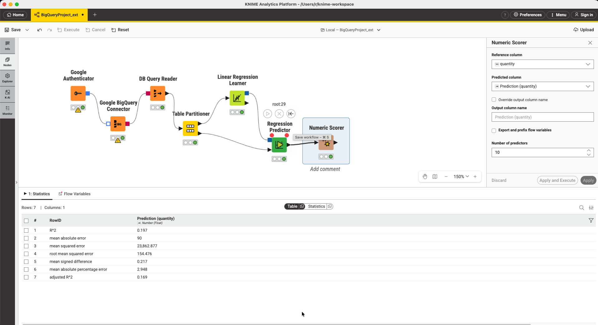
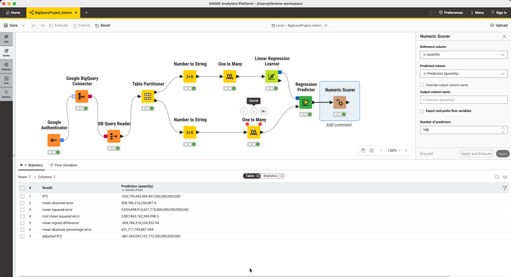
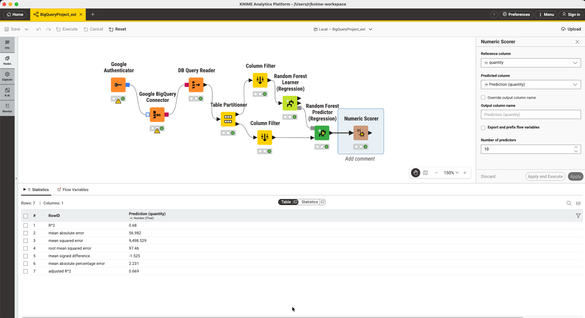

The Problem
Forecasting units sold from historical order data
The dataset lives in a shared Google BigQuery project — go_explore_project.daily_sales — containing 1,000 sales records across three retailers, multiple product lines, and five order methods spanning 2015–2017.
The goal: given a retailer, product, order method, and sale price, predict how many units will be sold. A working model here enables inventory planning, demand forecasting, and promotional targeting.
SELECT
retailer_code, -- 3 unique retailers
product_number, -- 400+ unique products
order_method_code, -- 5 methods (online, phone, etc.)
unit_sale_price, -- range: 6 – 54,747
quantity -- TARGET: range 1 – 1,795
FROM `mystical-proj-500509.go_explore_project.daily_sales`
LIMIT 1000
The Workflow
A visual ML pipeline built entirely in KNIME
KNIME's node-based interface makes each step of the pipeline explicit and auditable — no hidden transformations, no implicit defaults.
Google Authenticator
Service account JSON → OAuth token
BigQuery Connector
JDBC connection via Simba driver
DB Query Reader
SQL → KNIME data table
Table Partitioner
70% train / 30% test split
Random Forest Learner
Target: quantity · Features: all others
RF Predictor (Regression)
Model + test data → predictions
Numeric Scorer
R², MAE, RMSE evaluation
Iteration
Why the first model failed — and what fixed it
The baseline Linear Regression treated retailer_code (values like 1115, 1132, 1133) as continuous numbers, implying that retailer 1133 is "bigger" than 1115. That's meaningless — they're categories. This produced a weak R² of 0.197.

Attempting to fix this with One-Hot Encoding caused the model to explode into astronomically wrong predictions due to multicollinearity across 400+ product dummy variables.

The clean solution was switching to Random Forest, which handles categorical-like integers natively without encoding, and jumped R² to 0.685.

Results
Model comparison
✗ Linear Regression (baseline)
✓ Random Forest (final)
An R² of 0.685 means the model explains 68.5% of the variation in sales quantity using only four input features. The remaining variance is likely driven by factors not in the dataset — seasonal promotions, stockouts, regional events.
Key Learnings
What this project taught
Numeric codes ≠ numeric features
Retailer IDs and order method codes look like numbers but carry no ordinal meaning. Treating them as continuous variables misleads linear models significantly.
Model selection matters more than tuning
Switching from Linear Regression to Random Forest gave a larger gain than any amount of feature engineering on the linear model would have.
DB nodes vs. Table nodes are different worlds
KNIME's database nodes operate on SQL connections. ML nodes require in-memory data tables. A DB Reader node is the required bridge between the two.
A bad baseline makes the improvement legible
Starting with a weak model and showing the improvement is a more compelling portfolio narrative than presenting a polished result without context.
Stack
Tools used
| Tool | Role in project |
|---|---|
| KNIME Analytics Platform | End-to-end visual ML pipeline |
| Google BigQuery | Source data — go_explore_project.daily_sales |
| Random Forest Learner (Regression) | Final model — R² 0.685 |
| Linear Regression Learner | Baseline model — R² 0.197 |
| Numeric Scorer | R², MAE, RMSE evaluation |
| Table Partitioner | 70/30 train-test split |
Certificate
Completion Certificate